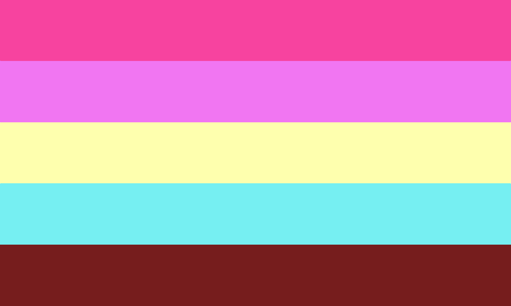

Princessgender !! :: A soft but grandiose gender; The individual with this gender feels that their identity feels majestic, imposing and grand, but also prim, cute and ethereal.
Also can be used if your gender simply is related to princesses, or if your gender is just A Princess.